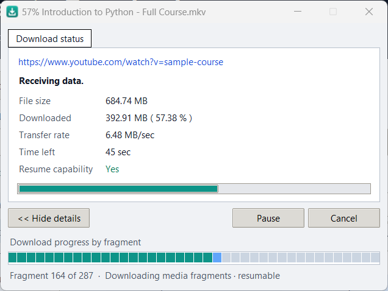
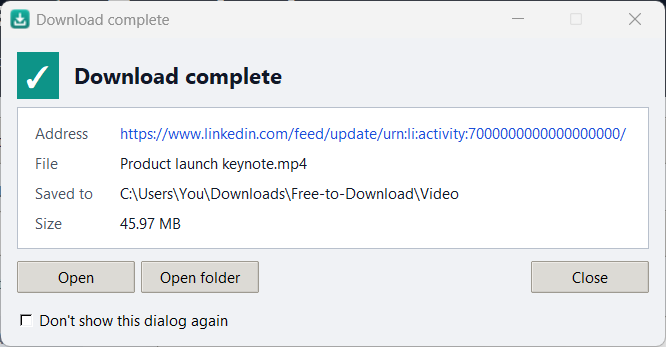
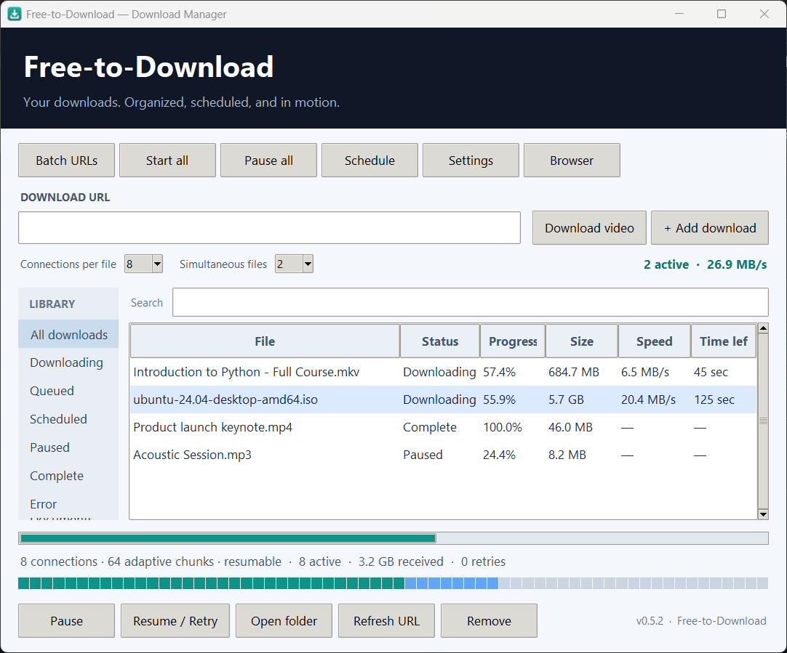

Everything a download manager should do
Built for everyday use: fast, resumable, and careful with your files.
Download this video
A button over web videos with a quality menu: Best, 1080p, 720p, 480p, 360p or audio-only MP3.
Multi-connection speed
Large files are split into chunks and fetched over up to 16 parallel connections.
Pause and resume
Stop a download and continue later, even after restarting the app, when the server allows it.
Streaming sites
YouTube, LinkedIn posts, Vimeo, X and many more, plus HLS and DASH streams, saved as MP4.
Queue and schedule
Limit simultaneous downloads, cap the speed, schedule starts and import a list of links.
Private and safe
The browser talks only to the app on your PC. Existing files are never overwritten.
See it in action
Every download gets its own progress window, and a clear message when it's done.



Set up in three steps
About two minutes, one time only.
Install the app
Run Free-to-Download-Setup.exe. No admin rights needed. If Windows says “Windows protected your PC”, click More info → Run anyway; the app isn't code-signed yet.
Add the browser button
Open
chrome://extensions, turn on Developer mode, click Load unpacked, and select thebrowser-extensionfolder (Start menu → Free-to-Download → Browser extension folder).Pair them
In the app click Browser → Copy pairing token, then paste it into the extension's Settings. Play a video and click Download this video.